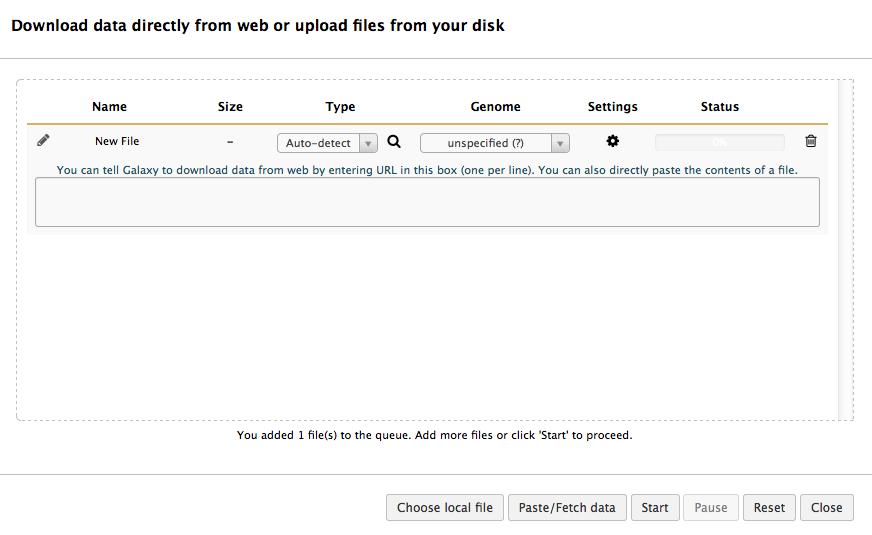
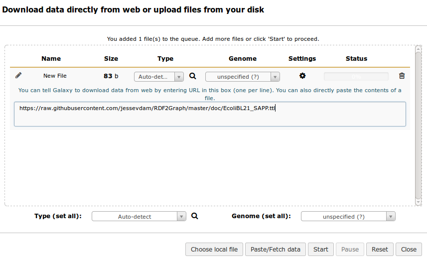
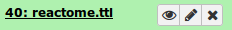
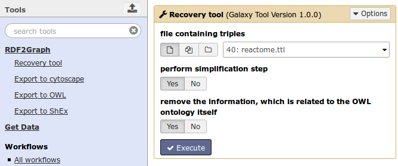
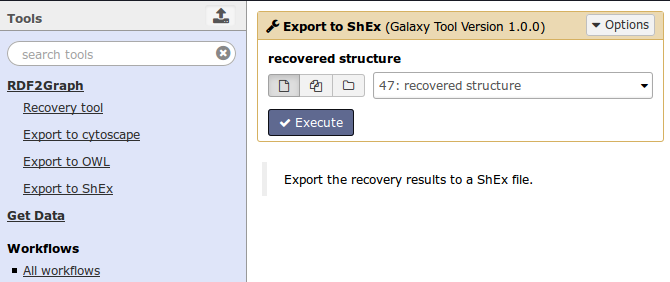
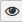
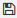

Welcome
This page will provide you with a short documentation on how to use the RDF2Graph tool within the galaxy platform. Structure recovery can be performed on various triple formats (NTriples, N3, Turtle, XML/RDF, JSON-LD).
The interface
For those who are new to the Galaxy interface, on the left side you have all the tools that are available. In the middle, where you are now reading this manual is where you can set the settings for the tools, like, choosing which files to perform recovery on and to set options like enabling simplification. On the right side you have your current history where you can download or view your results.
Tools
Example
Use this symbol to upload your RDF file from your local machine or from another website. Then click on paste/fetch data. It should look like this.

When the file is located on your local machine click choose local file. If the file is on another server click 'Paste/Fetch data' then paste the URL past it in the text box area. Example data set is available at https://raw.githubusercontent.com/jessevdam/RDF2Graph/master/doc/EcoliBL21_SAPP.ttl

Click start and it will turn green when done and it should appear in your history on the right and turn green.

Run RDF2Graph recovery
We now select the 'Recovery tool' in the left bar (first click on RDF2Graph to open menu), which will show the following options in the middle screen. Select your upload file and click 'execute'.

On the right side a job will be executed and will be yellow during computation and turn green upon completion.
Run ShEx exporter
After this step you can use for example the ShEx exporter using the 'Export to Shex' tool. Please select the result of the recovery tool and press 'execute'.

Again on the right side a job will be executed and will be yellow during computation and turn green upon completion. When completed click on the  icon to view the result in the middle screen or click on the title to expand the item and click on the  button to save the file on your computer.
Cytoscape and OWL exporter
For exporting to cytoscape or owl file please use the 'export to cytoscape' and 'export to OWL' tools and download the result to your local computer and open either with Cytoscape (version 3.0 or higher) or with Protoge.
Local instalation of this RDF2Graph galaxy instalation? Please contact jesse.vandam (_a_t_) wur (_d_o_t_) nl